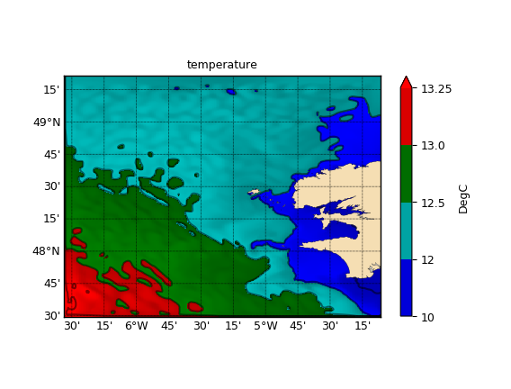

1.3.3.5.3.6. Utilisation d’une palette à paliers irréguliers¶
Voir : StepsNorm, cmap_rs(),
colorbar(), map().

Carte de SST utilisant une palette de couleurs à paliers irréguliers.
# -*- coding: utf8 -*-
from vacumm.misc.plot import map2
from vacumm.misc.color import cmap_rs, StepsNorm
from vacumm.config import data_sample
import cdms2
# Lecture
f=cdms2.open(data_sample('mars3d.xy.nc'))
sst = f('temp')
f.close()
# Spécifications
# - niveaux
levels = [10, 12, 12.5, 13., 13.25]
# - normalisation
norm = StepsNorm(levels)
# - palette avec une couleur entre chaque niveau
cmap = cmap_rs(['b', 'c', 'g', 'r'], lstretch=-.3)
# Carte avec extension de la colorbar vers les max
map2(sst, vmin=0., vmax=1.5, cmap=cmap, levels=levels,
norm=norm, # in fact, StepsNorm is used by defaults
fill='pcolor',
clabel_glow=True, colorbar_shrink=.8, xymasked=False,
colorbar_boundaries=levels+[levels[-1]], colorbar_extend='max',
figsize=(5.5, 4.5), savefigs=__file__, show=False)